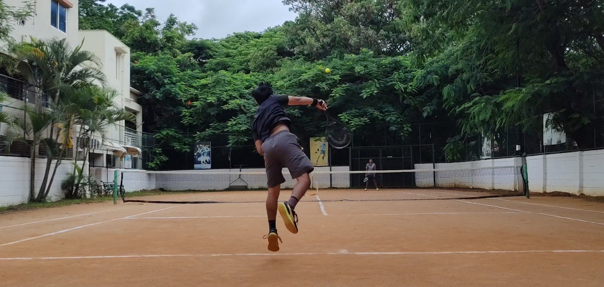

Background
Born in Bengaluru, India. Passionate about using Data Science and Tech for Social Impact. Currently focused on Machine Learning for Climate Change and building systems that make a difference.
Research Interests
Recent Updates
- Mar 2026 Received admission to the MS in Computer Science program @ Georgia Tech
- Dec 2024 Invited as a Jury Member for Project Open House Panorama 2024 at RNSIT
- Aug 2024 3 papers accepted at ACOIT 2024 on misinformation, cyberbullying, and hyperpartisanship detection
- Mar 2024 Paper on physical exercise form detection accepted at ICCIIS 2024
Publications
2025
Identifying Hyperpartisanship in News Media Using Bi-LSTM and Decoding-Enhanced BERT
ACOIT 2024
Graph-Based Representation and Detection of Cyberbullying on Social Media Using GCNs
ACOIT 2024
Impact of Misinformation on Reddit User Behavior: A Multimodal Transformer-Based Detection Model
ACOIT 2024
2024
2023
Education
Bachelor of Engineering
Information Science and Engineering
AI & Machine Learning
Data Mining
Big Data
Data Structures
DBMS
Operating Systems
Computer Networks
Interests

Tennis
Snooker
Chess - Rapid (Highest)
Currently Reading: The Trial